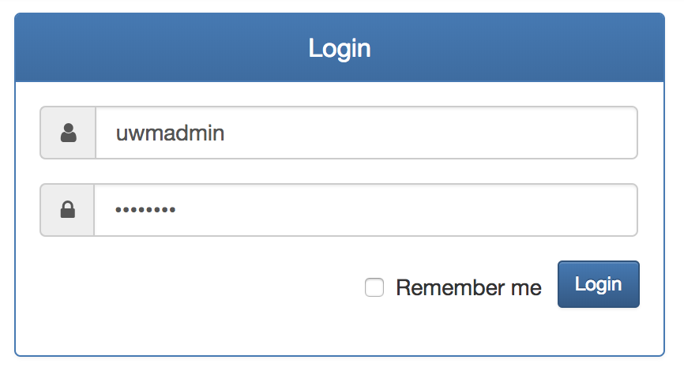
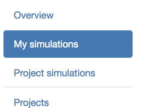
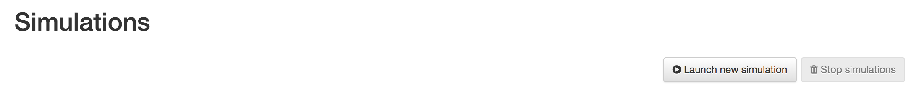
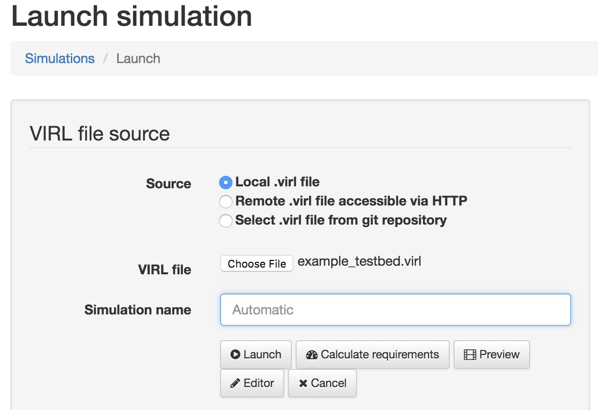
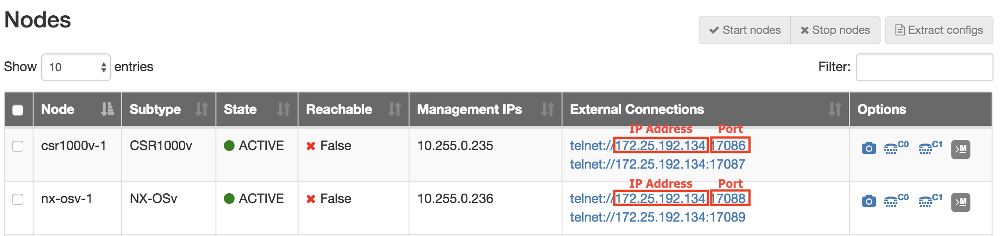

VIRL¶
VIRL (Virtual Internet Routing Lab) is Cisco’s powerful network simulation platform, with Cisco OS virtual machines shipped with the software package.
It’s your flexible, all-in-one virtual networking lab. No more bulky network equipment and hours of wiring! Easy-to-build connections to actual networking equipment or to extend your lab by linking physical and virtual networking devices.
DevNet user¶
Get virl. The license needs to be purchased.
Install VIRL depending on type of your platform.
Download sample virl files as below.
Load the virl file on VIRL and launch the topology.
Access to UWM and login with your credential. (default: uwmadmin/password)
http://<VIRL VM IP Address/
Click “My Simulations” from left side menu.
Click “Launch new simulation”
Select “Local .virl file” and select the downloaded “example_testbed.virl”. And then click ‘Launch”.
The page will be changed and you can find below table after some time. Please make sure below 2 device are active state and take a note following ip address and port number in red box for 2 devices.

Below is a sample testbed yaml file.
Note
Machine where pyATS/Genie are running should have a reachability to the IP address in Step4
Replace the ‘<ip address>’, ‘<port>’ with what you took a note in Step4.
Cisco employee¶
Get virl image from below page.
PC/Mac : virl.xxxx.pc.ova ESXi / vSphere : virl.xxxx.esxi.ova
Install VIRL depending on type of your platform.
Download sample virl files as below.
Load the virl file on VIRL and launch the topology.
Access to UWM and login with your credential. (default: uwmadmin/password) http://<VIRL VM IP Address/
Click “My Simulations” from left side menu.
Click “Launch new simulation”
Select “Local .virl file” and select the downloaded “example_testbed.virl”. And then click ‘Launch”.
The page will be changed and you can find below table after some time. Please make sure below 2 device are active state and take a note following ip address and port number in red box for 2 devices.
Below is a sample testbed yaml file.
Note
Machine where pyATS/Genie are running should have a reachability to the IP address in Step4
Replace the ‘<ip address>’, ‘<port>’ with what you took a note in Step4.